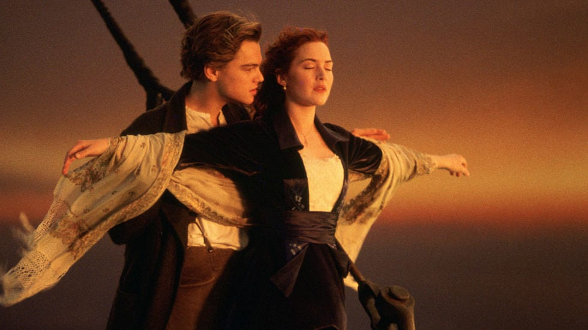
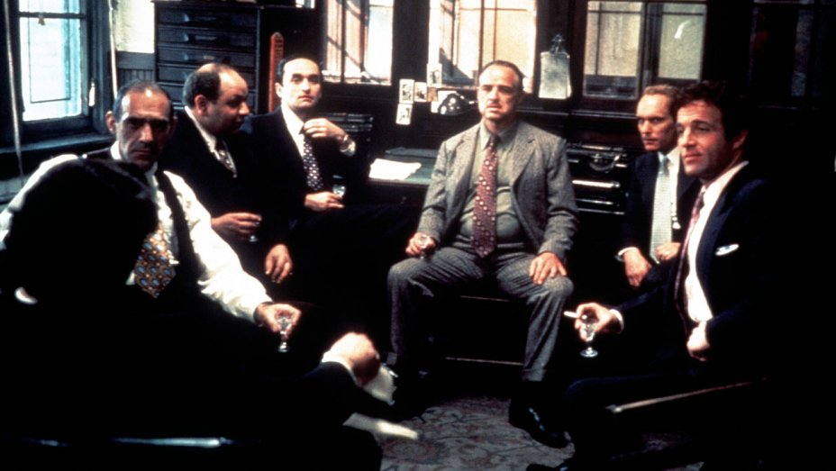

This is about my favorite movies

Harry Potter
Description:
Rescued from the outrageous neglect of his aunt and uncle, a young boy with a great destiny proves his worth while attending Hogwarts School of Witchcraft and Wizardry.
Director: Chris Columbus
Writers: J.K. Rowling (novel), Steve Kloves (screenplay)
Stars: Daniel Radcliffe, Rupert Grint, Richard Harris
Harry Potter is a series of fantasy novels written by British author J. K. Rowling. The novels chronicle the life of a young wizard, Harry Potter, and his friends Hermione Granger and Ron Weasley, all of whom are students at Hogwarts School of Witchcraft and Wizardry . The main story arc concerns Harry's struggle against Lord Voldemort, a dark wizard who intends to become immortal, overthrow the wizard governing body known as the Ministry of Magic, and subjugate all wizards and Muggles.
Titanic

Description:
Titanic was a British passenger liner that sank in the North Atlantic Ocean in the early morning of 15 April 1912, after colliding with an iceberg during her maiden voyage from Southampton to New York City. Wikipedia
Length: 883?
Construction started: March 31, 1909
Launched: May 31, 1911
Weight: 52,310 tons
Place built: Belfast
Designer: Thomas Andrews
Sister ships: HMHS Britannic, RMS Olympic
The Lord of the Rings

Description:
The future of civilization rests in the fate of the One Ring, which has been lost for centuries. Powerful forces are unrelenting in their search for it. But fate has placed it in the hands of a young Hobbit named Frodo Baggins (Elijah Wood), who inherits the Ring and steps into legend. A daunting ta… More
Release date: December 19, 2001 (USA)
Director: Peter Jackson
Featured song: May It Be
Budget: 93 million USD
Screenplay: Peter Jackson, Fran Walsh, Philippa Boyens
The Godfather

Description:
Widely regarded as one of the greatest films of all time, this mob drama, based on Mario Puzo's novel of the same name, focuses on the powerful Italian-American crime family of Don Vito Corleone (Marlon Brando). When the don's youngest son, Michael (Al Pacino), reluctantly joins the Mafia, he become… More
Release date: March 24, 1972 (USA)
Director: Francis Ford Coppola
Music composed by: Nino Rota
Featured songs: Speak Softly Love, I Have But One Heart
Screenplay: Francis Ford Coppola, Mario Puzo, Robert Towne
click here to sea movies